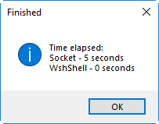
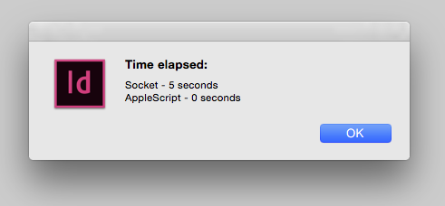

A much better alternative to the Socket object
If you want to get some data from the web, you can use the Socket object, of course. But there is an alternative approach — using platform specific shell scripts (PC or Mac) called from InDesign’s doScript() method — which is much faster.
You can test it yourself by running the code below (you can download the snippet from here) which downloads the html code of the main page from my site using both approaches and writes it into the ESTK Console. Note that it takes the whole five seconds for the Socket and zero secs for the shell scripts both on Mac and PC.
Windows

Mac

Main();
function Main() {
var webAddress = "kasyan.ho.ua";
var startTime = new Date();
GetDataFromSocket(webAddress);
var endTime = new Date();
var duration_1 = GetDuration(startTime, endTime);
if (File.fs == "Windows") {
startTime = new Date();
GetDataFromWshShell(webAddress);
endTime = new Date();
var duration_2 = GetDuration(startTime, endTime);
alert("Time elapsed:" + "\rSocket - " + duration_1 + "\rWshShell - " + duration_2, "Finished");
}
else { // Mac
startTime = new Date();
GetDataFromDoShell(webAddress);
endTime = new Date();
var duration_2 = GetDuration(startTime, endTime);
alert("Time elapsed:" + "\rSocket - " + duration_1 + "\rAppleScript - " + duration_2, "Finished");
}
}
function GetDataFromSocket(webAddress) {
var conn = new Socket;
var host = webAddress;
var cmd = "GET /index.html HTTP/1.1\r\nHost:"+host+"\r\n\r\n";
var reply='';
conn.timeout = 100;
if (conn.open (host +':80', 'BINARY')) {
conn.write (cmd);
while (conn.connected && ! conn.eof) {
reply += conn.read(1024) + "\n";
}
conn.close();
$.writeln("Output from Socket:\n" + reply);
}
}
function GetDataFromDoShell(webAddress) {
var appleScript = 'do shell script "curl http://' + webAddress + '/"';
var result = app.doScript(appleScript, ScriptLanguage.APPLESCRIPT_LANGUAGE);
$.writeln("Output from AppleScript:\n" + result);
}
function GetDataFromWshShell(webAddress) {
var vbs = 'Dim str\r';
vbs += 'URL = "http://' + webAddress + '"\r';
vbs += 'Set http = CreateObject("Microsoft.XmlHttp")\r';
vbs += 'On Error Resume Next\r';
vbs += 'http.open "GET", URL, False\r';
vbs += 'http.send ""\r';
vbs += 'if err.Number = 0 Then\r';
vbs += 'str = http.responseText\r';
vbs += 'Else\r';
vbs += 'MsgBox("error " & Err.Number & ": " & Err.Description)\r';
vbs += 'End If\r';
vbs += 'Set http = Nothing\r';
vbs += 'Set objInDesign = CreateObject("InDesign.Application")\r';
vbs += 'objInDesign.ScriptArgs.SetValue "WshShellResponse", str';
try {
app.doScript(vbs, ScriptLanguage.VISUAL_BASIC);
}
catch(err) {
alert(err.message + ", line: " + err.line);
}
var str = app.scriptArgs.getValue("WshShellResponse");
app.scriptArgs.clear();
$.writeln("Output from WshShell:\n" + str);
}
function GetDuration(startTime, endTime) {
var str;
var duration = (endTime - startTime)/1000;
duration = Math.round(duration);
if (duration >= 60) {
var minutes = Math.floor(duration/60);
var seconds = duration - (minutes * 60);
str = minutes + ((minutes != 1) ? " minutes, " : " minute, ") + seconds + ((seconds != 1) ? " seconds" : " second");
if (minutes >= 60) {
var hours = Math.floor(minutes/60);
minutes = minutes - (hours * 60);
str = hours + ((hours != 1) ? " hours, " : " hour, ") + minutes + ((minutes != 1) ? " minutes, " : " minute, ") + seconds + ((seconds != 1) ? " seconds" : " second");
}
}
else {
str = duration + ((duration != 1) ? " seconds" : " second");
}
return str;
}
Here is a description of shell commands used in the script above: curl (Mac) and XML DOM Properties and Methods (Windows).